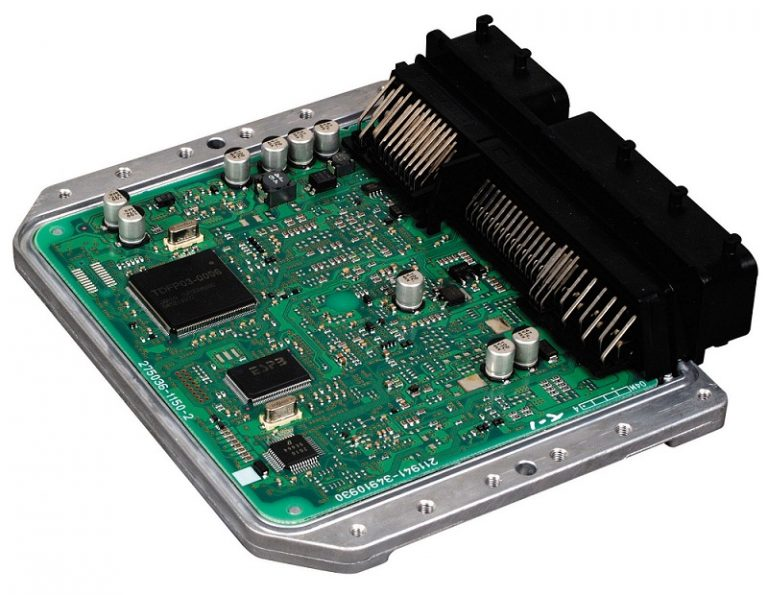
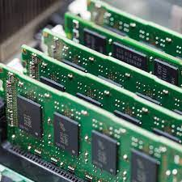
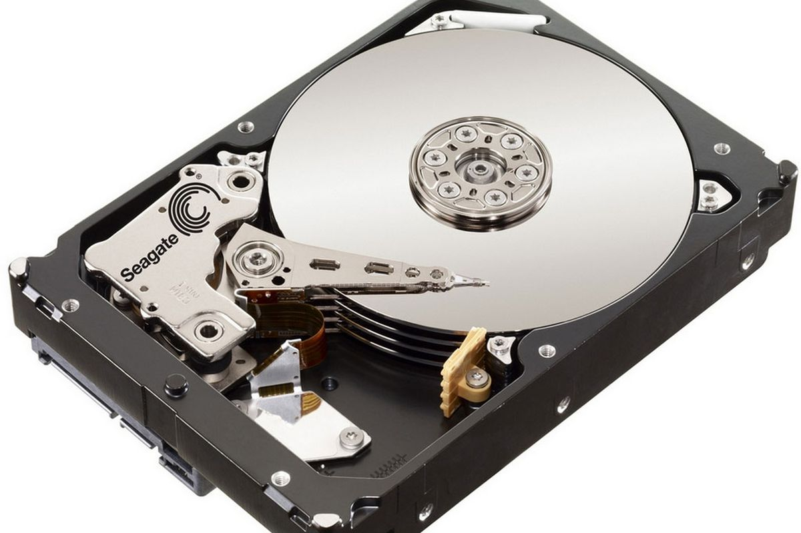
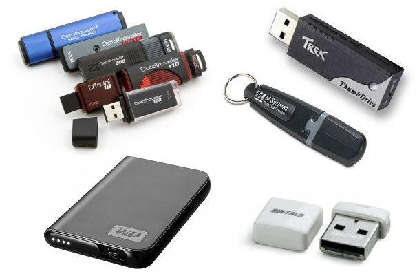

Computer Hardware Terminology
Input Device

Input devices are hardware devices which convert input into binary numbers, then sends the numbers to the CPU for processing. Some examples of input devices are keyboard, mouse, touchscreen, camera, micorphone, and more.
Back to Table of Contents
Output Devices

Output Devices take the processed information in binary, and communicates it back to the user after interpretation. Some examples of output devices are screen, speaker, printer, and more.
Back to Table of Contents
Central Processing Unit (CPU)

The Central processing unit, or CPU, is used to process the information given by the input devices that are in binary numbers, then fetch memory needed to come up with an answer. When the answer is ready, it will be sent to and output device to display to the user.
Back to Table of Contents
Arthmetic Logic Unit (ALU)

The Arthmetic logic unit, or ALU, is an extention of the CPU. It is controlled by the control unit to preform simple arthmetic operations. It will send the answers back when it's done.
Back to Table of Contents
Control Unit

The Control Unit is part of the CPU that regulates all the operations. It selects and retrieves the needed instructions from memory and interprets them for the computer.
Back to Table of Contents
Random Access Memory

The Random access memory also known as RAM, is the computer's short term memory. RAM is very fast and is used for things that the computer is actively working on in the moment, such as applications and instructions/data from those applications. The temporary storage goes away once power is turned off.
Back to Table of Contents
Optical Memory
Examples of optical memory are CD's, and DVD's. Optical Memory is created by using low power lazer beams to encode the disk with binary data. It is retrieved by using a low power lazer to scan the disk for data.
Back to Table of Contents
Magnetic Memory

Magnetic memory is another method for storing memory. As the name suggests,it records data using magnetic properties. Magnetic memory has a longer life-span compared to optical and flash memory. It also has ability to rewrite.
Back to Table of Contents
Flash Memory

Flash storage is often found in USB flash drives, SD cards, mobile phones, laptops, and more. Similat to RAM, it has the ability to electroniclly rewrite and erase, but Flash memory will retain its contents when power is off.
Back to Table of Contents
Logic Gates

Logic gates are the very basis of any digital system. They take more than one input and produce an output based on a certain logic. The most common logic gates are named AND gate, OR gate, NOT gate.
Back to Table of Contents